Introduction
Generative Adversarial Networks (GANs) are a type of unsupervised neural networks that falls under the purview of deep learning models. They are commonly used in the image-processing domain to create art [1], music [2], or to improve the quality of low-resolution images/videos [3]. Recently, researchers at the University of Toronto used their applications in biochemistry and medical studies to generate 30,000 designs for six different new compounds that were found to imitate drug-like properties and target a protein involved in fibrosis [4]. I trained a GAN model to generate fake Pokémon.Because GANs are primarily taught to learn the distribution of any given dataset, the applications are really domain-independent. GANs will be able to replicate aspects of our environment given a well-defined dataset. The key constraint is the computing power required to train these models, which is further hampered by the fact that they are notoriously difficult to train, necessitating extra training time and computational power.
What makes training these models so difficult? Understanding this requires taking a look under the hood of this model. It was first proposed in the landmark paper Generative Adversarial Nets [5], and it presents a paradigm in which two fully-connected neural networks (NN) compete in a zero-sum game. One of the NNs, known as the generative network or the generator, will work to generate "false" data, while the other, known as the discriminative network or the discriminator, will work to evaluate and distinguish between the actual and fake data.
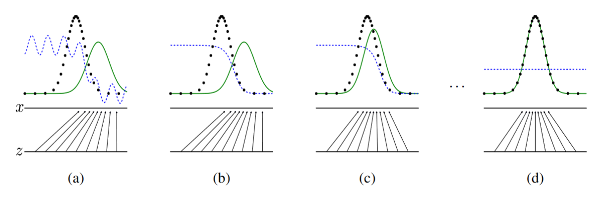
Figure 1 depicts an abstract representation of how the generator (green line) would "dupe" the discriminator. The generator will train until its distribution resembles that of the real dataset (black dotted line). Given that the generator's job is to trick the discriminator until it can no longer distinguish between the two distributions, the discriminative distribution (blue dashed line) should flatten when the fake and actual distributions become indistinguishable.
The model used to create the "fake" Pokémon in this case is known as the DCGAN, which stands for Deep Convolutional Generative Adversarial Network. This model, unlike the fully connected models suggested in [5] employs two convolutional neural networks (CNNs) for the generative and discriminative networks. The discriminator is a CNN model, whereas the generator is a deconvolutional neural network, which works inversely to a conventional CNN model. Where a CNN learns the spatial hierarchies of features within an image, moving from granular to high level details, the deconvolutional neural network or the generator learns to convert the latent space inputs into an actual image, generating meaning from noise, by regularly updating its weights by learning how the discriminator evaluates the images fed into its network. This is depicted in the figure below, which shows how data flows through a generative neural network.
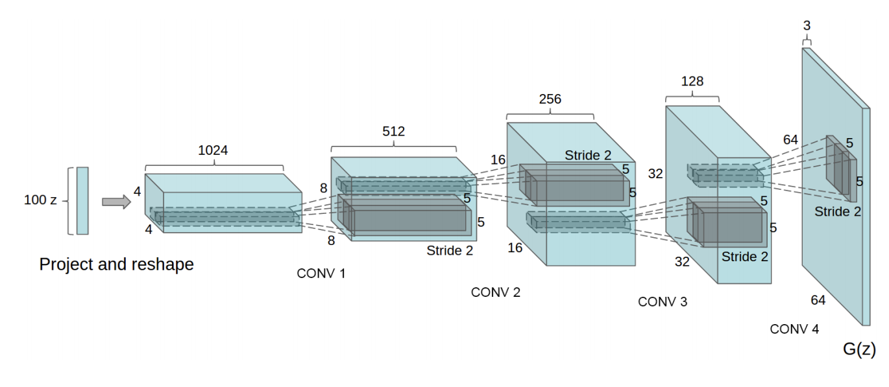
By providing a random seed, the generator begins to produce candidates for the discriminator from a latent space and maps it to the distribution of the dataset being used. A latent space is a representation of compressed data best explained in [7]. The space is initially populated randomly, but as the generator begins to understand a dataset’s distribution, the latent space would slowly start to be populated by features learned from the distribution. In contrast, the discriminator is trained on random datapoints drawn from the actual dataset. Both models will be trained until they achieve an acceptable level of accuracy, with each model undergoing backpropagation individually to enhance accuracy.
This is further emphasized in Figure 3 below, where we see how the data produced by the generator is fed to the discriminator along with the real data.
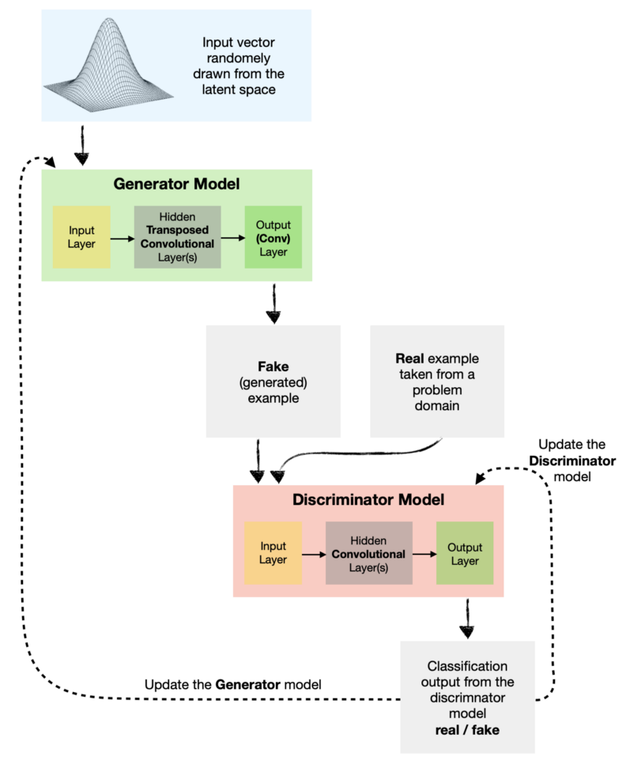
Data Collection and Processing
For this project, the Pokémon dataset was acquired via Kaggle. The original dataset is made up of 819 photos that were uploaded as .png files with a resolution of 256x256 pixels [9]. Because GANs are notoriously data hungry [10], the size of this dataset was expanded 13 times prior to training by executing a data augmentation step.

Despite expanding the dataset size, the results appeared to follow the same patterns as those seen on Kaggle [9].
Normalizing the dataset by calculating the mean and standard deviation did not appear to improve the results and
actually worsened them.
A few considerations regarding the hyperparameters were made before training the model. The training was repeated
four times to see if altering certain hyperparameters affected the quality of the results. The learning rate, batch size,
latent space, and number of epochs were all altered. Because of memory constraints caused by the number of layers in the
models, the 256x256 input picture was scaled down to accept 64x64 and 128x128 images. The change in the input did not appear
to drastically change the resolution of the outputs either.
Setting the batch size to a smaller value would prevent the discriminator from quickly outperforming the generator, leading
to poorer results. The learning rate was also set to a conservative value; 1e-4 as it led to better results, purely based on
the results observed over the 4 iterations. The latent space was primarily changed based on the assumption that because this
value represented “compressed” data, the generator would reconstruct the distribution of the dataset from a larger value
(or from larger latent space), ultimately leading to better results. Finally, the training time or epochs were chosen
based on prior implementations of this project, other similar projects, and the constraints of my PC.
The values that were selected for each of the iterations are presented in the Table 1 below
| Run | Model Version | Batch Size | Learning Rate | Latent Space | Epochs |
|---|---|---|---|---|---|
| 1 | 64 px | 128 | 1.00E-04 | 64 | 100 |
| 2 | 64 px | 64 | 2.00E-04 | 128 | 70 |
| 3 | 128 px | 128 | 2.00E-04 | 256 | 200 |
| 4 | 128 px | 64 | 1.00E-04 | 256 | 100 |
Results
The results for each of the runs, presented in Table 1 are presented below
RUN 1

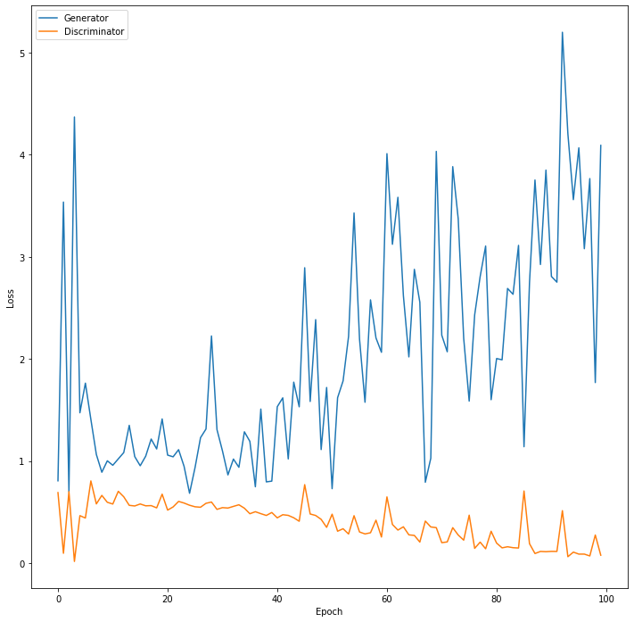
The Pokémon generated using this model have distinct shapes and colours, but they lack features such as faces, limbs, or appendages such as tails, wings, horns, fins, and so on that are commonly seen on Pokémon. The losses for both models appear to raise concerns about mode collapse and/or failure of convergence based on the loss plot. When the generator's loss begins to oscillate repeatedly with the same oscillation loss pattern, mode collapse might have occurred. It also results in very little diversity among the samples generated. However, the outcomes are far from identical. While it is evident that the loss functions for the generator and discriminator do not converge, it would also lead to the results simply producing plain noise as in Figure 7 below.

As a result, in addition to determining the best combination of hyperparameters, three additional runs were carried out to see whether similar patterns in the loss functions from Figure 6 maintained.
RUN 2

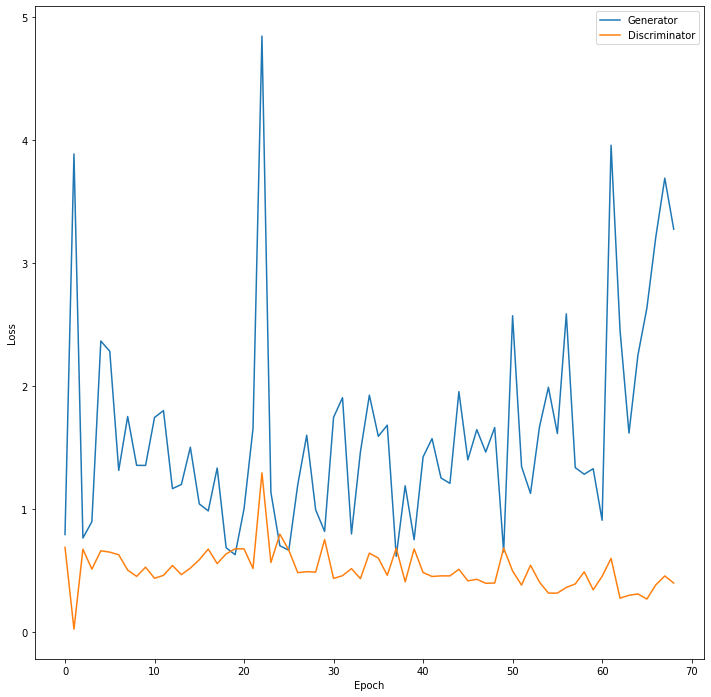
RUN 3
 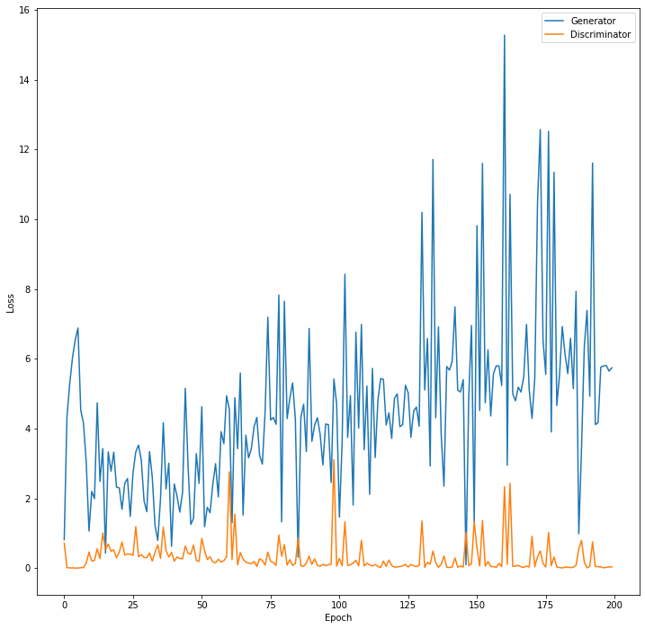
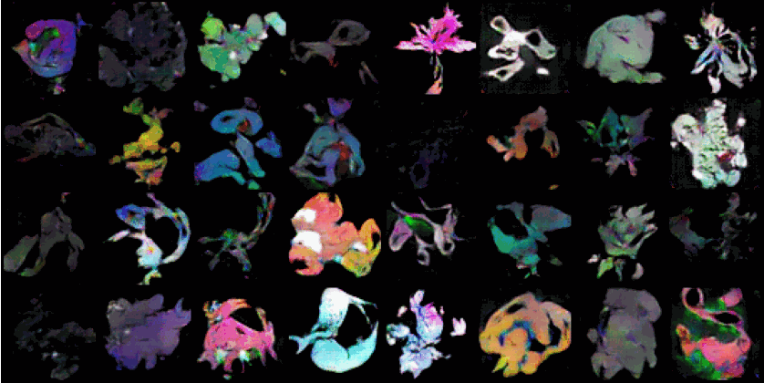
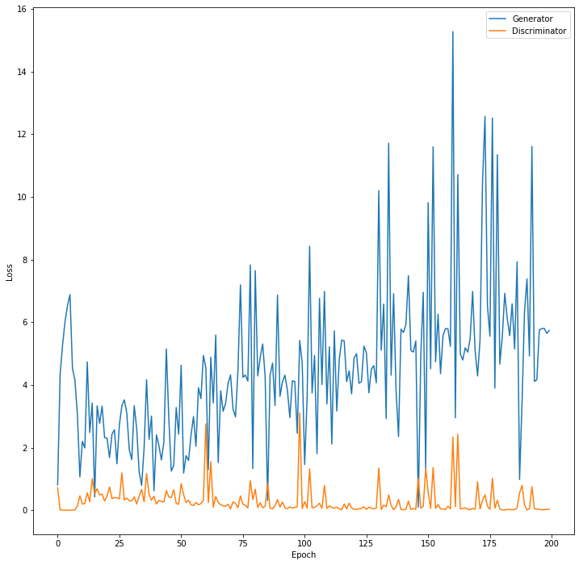
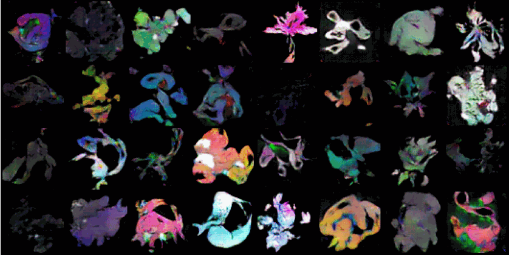
RUN 4
 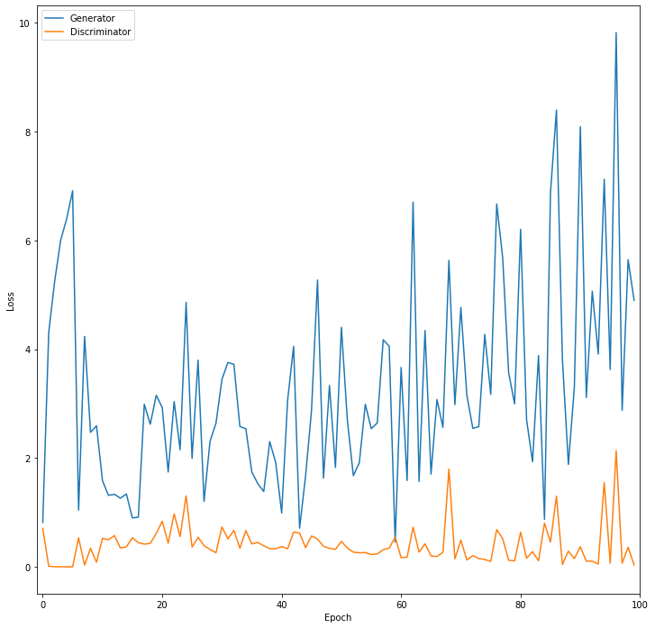
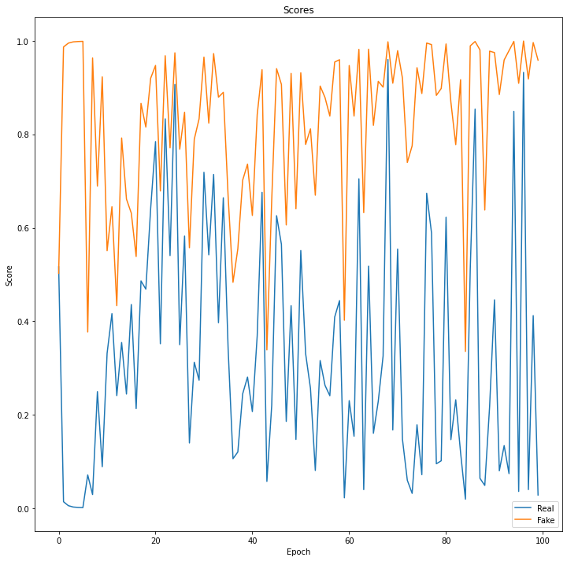
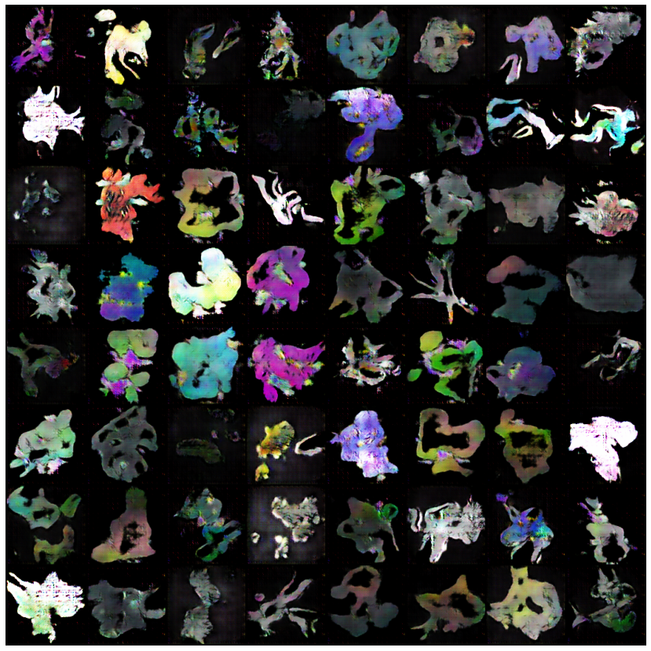
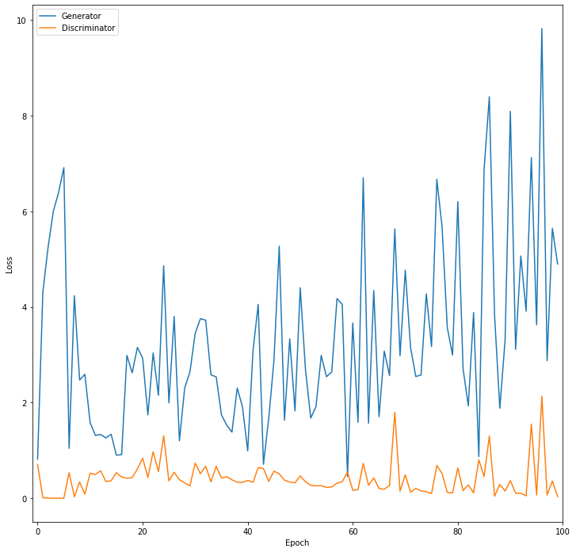
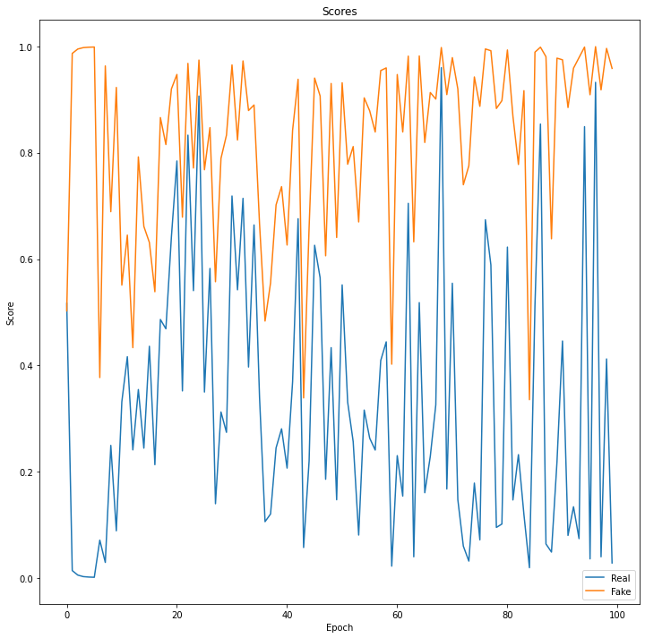
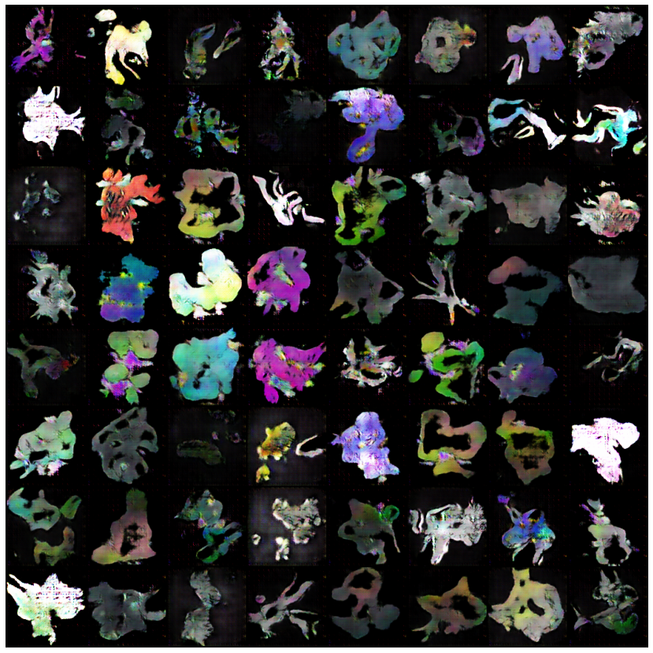
The loss functions for the generator and discriminator in Figures 9, 10, and 12 are observed to follow a general trend, seen in Figure 6. The results obtained throughout each of these runs are also identical to the ones shown in Figure 5. However, when examined through a forced creative lens, the results of the third run appear to show some form of limbs and appendages. Except for a couple in the last row of Figure 11, none of the results are truly legible. Because this model was trained for the longest time, 200 epochs, there is a significant likelihood that training the DCGAN model using the hyperparameters from RUN 3 for an even longer time will result in more defined outcomes.
Despite the slightly underwhelming results, I believe the project has great promise. Curating a more well-defined dataset with greater care to the data augmentation step could yield more clarity to the results presented. Furthermore, by labelling the data, and introducing noisy labels through the flipping the labels (by labelling real data as fake), the discriminator could be confused., thereby improving the results. In addition, I did not include many filters in the CNN models. Increasing the number of filters would also aid the CNN in extracting more information from images.
References
- The Verge: AI Art GANs - Mario Klingemann
- Harvard University: Abstract for arXiv:1809.00219
- The Economist: Fake News
- Wired: Molecule Designed AI Exhibits Drug-like Qualities
- arXiv:1406.2661.pdf
- Towards Data Science: Understanding Latent Space in Machine Learning
- Medium: Image Reference
- Kaggle: Pokémon Images Dataset
- NVIDIA Blog: NeurIPS Research on Limited Data